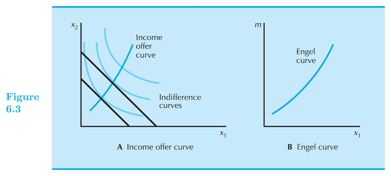
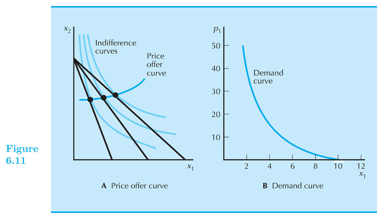

Demand
Intermediate Microeconomics (Econ 100A)
Kristian López Vargas
UCSC - Spring 2017
Demand function
-
"Optimal bundle" for generic prices and income = Demand Function.
-
The "optimal bundle" changes when income or prices change: that is why we call it demand function.
Demand function
-
For a specific utility (preferences) and given set of income and prices, we have learned how to find the optimal bundle.
-
If you solve this, so called, consumer's problem for generic income and prices $ (p_1,p_2,m) $, what you obtain is the demand function: $ x_1^{*}(p_1,p_2,m) $.
-
For example, if utility is Cobb-Douglas, then $ x_1^{*} (p_1,p_2,m) = \frac{a m}{ (a+b) p_1} $
A consumer's demand function indicates the optimal choice for a given set of prices and income.
Changes in income
$ x_1 = x_1(p_1,p_2,m) $
-
How does the optimal consumption of $ x_1 $ changes with changes in income? $ \frac{\partial x_1}{ \partial m } $ Vs. $ 0 $
-
A normal good: its consumption increases when income increases.
- $ \frac{\partial x_1}{ \partial m } > 0 $
- Do graph
-
An inferior good: its consumption decreases when income increases.
- $ \frac{\partial x_1}{ \partial m } < 0 $
- Do graph
Engel Curve
- The Engel Curve maps each level of income to the optimal consumption of a good, holding prices constant.

Engel Curve - Inferior good

Changes in prices
-
$ \Delta p_1 $ tilts or pivots the budget line.
-
How does the optimal consumption of $ x_1 $ changes with changes in $ p_1 $? $ \frac{\partial x_1}{ \partial p_1 } $ Vs. $ 0 $
-
Ordinary good: its consumption decreases when its price increases.
- $ \frac{\partial x_1}{\partial p_1} < 0 $
- Do graph
-
Giffen good: its consumption increases when its price increases.
- $ \frac{\partial x_1}{\partial p_1} > 0 $
- Do graph
Demand curve
- Demand curve: describes the relationship between the optimal choice of a good and its price, with income and other prices held constant.

Giffen Good

Substitutes and Complements
-
Gross Substitutes: $ \frac{\partial x_1}{ \partial p_2 } > 0 $
-
Gross Complements: $ \frac{\partial x_1}{ \partial p_2 } < 0 $